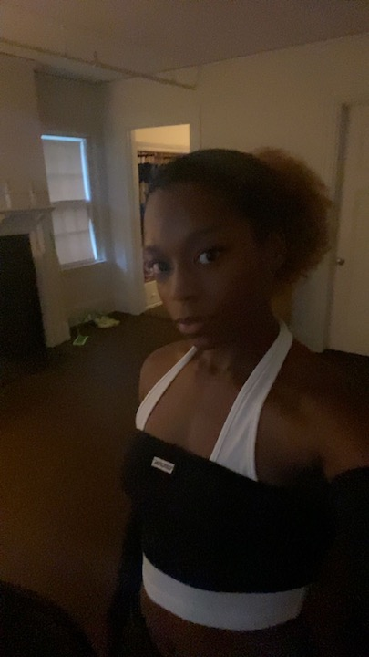

About Me
I'm a graphic design major at Lesley University
I was born and raised in Houston,Texas with my four siblings
I play basketball for the Lesley University Lynx
I transferred from a community college in texas to come to Cambridge,Massuchuetts
Ive been doing many forms of art since I was 10
Ive been doing graphic design for 3 years now
Programs I'm experienced in
- Adobe Illustrator
- Adobe Photoshop
- Adobe XD
- Adobe Indesign
- Adobe Acrobat
- Procrate
- Adobe Animate
My Goal
My goal is to graduate and get my bachlors in BFA
and use this website so that i can get a job in the advertising buisness
with my designs for different known and smaller brands and buisnesses
Evetuallly ill use those connections to become a freelance graphic designer
to help many small buisness with different problems they want to solve
Inspiration
There are many graphic design artists that inspire my work throughout the years and here are some of my favorites